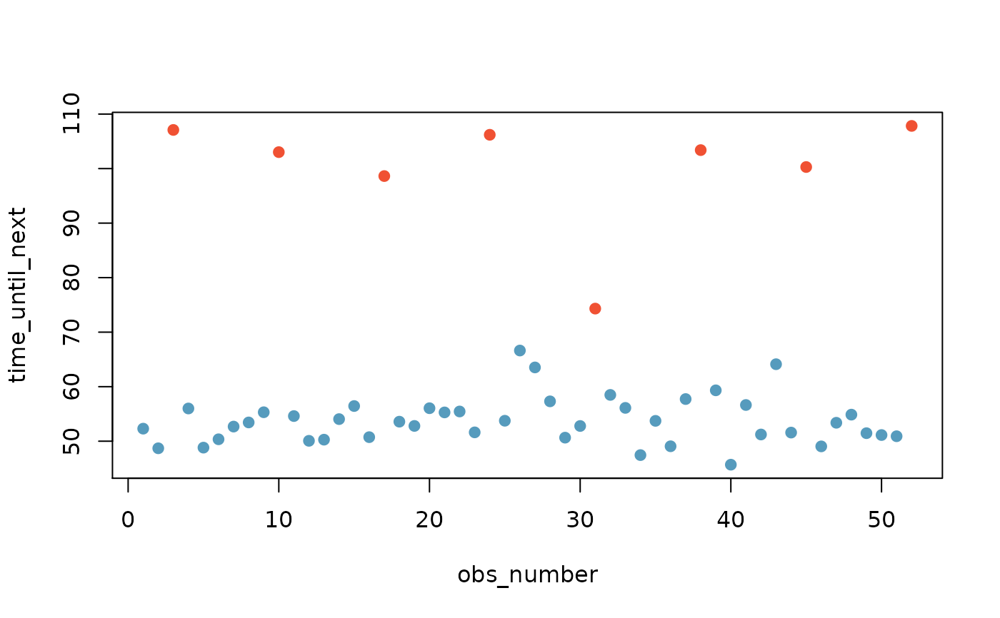
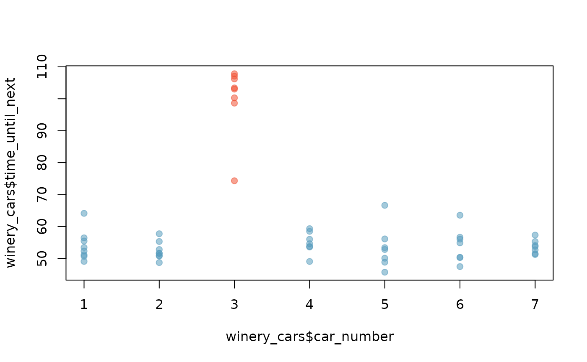

These times represent times between gondolas at Sterling Winery. The main take-away: there are 7 cars, as evidenced by the somewhat regular increases in splits between every 7 cars. The reason the times are slightly non-constant is that the gondolas come off the tracks, so times will change a little between each period.
winery_cars
A data frame with 52 observations on the following 2 variables.
The observation number, e.g. observation 3 was immediately preceded by observation 2.
Time until this gondola car arrived since the last car had left.
In-person data collection by David Diez (OpenIntro) on 2013-07-04.
Important context: there was a sufficient line that people were leaving the winery.
So why is this data valuable? It indicates that the winery should add one more car since it has a lot of time wasted every 7th car. By adding another car, fewer visitors are likely to be turned away, resulting in increased revenue.
winery_cars$car_number <- rep(1:7, 10)[1:nrow(winery_cars)] col <- COL[ifelse(winery_cars$car_number == 3, 4, 1)] plot(winery_cars[, c("obs_number", "time_until_next")], col = col, pch = 19)